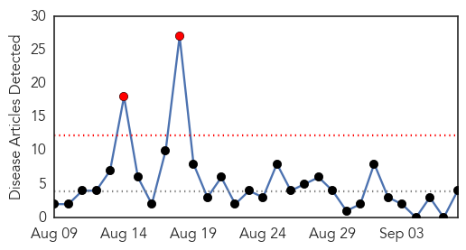
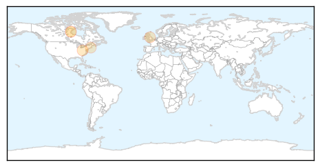
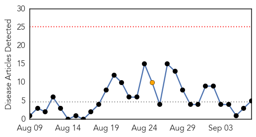
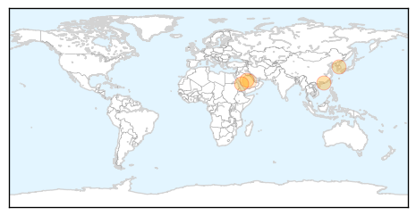

Meningitis
30-Day Web Trend
2 alerts, 0 warnings

30-Day Twitter Trend
0 alerts, 0 warnings
Article Locations
Article Confidences
Top Articles:
Top Tweets:
-
No tweets found for Sep 07, 2015
MERS
30-Day Web Trend
0 alerts, 1 warnings

30-Day Twitter Trend
7 alerts, 8 warnings

Article Locations
Article Confidences

Top Articles:
- 0.995
- WHO Emergency Committee discusses MERS-CoV outbreak
- 0.990
- SCH and HMC Offer Health Safety Tips for Hajj Pilgrims
- 0.984
- Transmission characteristics of MERS and SARS in the healthcare setting: a comparative study
- 0.950
- Transmission characteristics of MERS and SARS in the healthcare setting
- 0.605
- H5N1: Saudi Arabia: School sounds alert over MERS fatality in Al-Kharj
Top Tweets:
- 0.597
- AFD Blog `Saudi MOH Announces 4 New MERS Cases' MERS-CoV http://t.co/xW9XuC7M1D